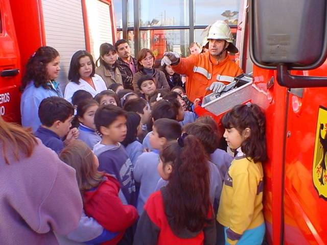

Junto con nacer una idea, nacen los hombres que la hacen realidad. Es el caso de nuestros socios colaboradores, que mes a mes hacen realidad nuestras aspiraciones y sueños. En la actualidad nuestra compañía cuenta con un gran numero de contribuyentes ya sea en nuestro puerto y en el sector Denavi Sur, además de personas que hacen su aporte en otras regiones de nuestro país.Recientemente hemos habilitado un correo electrónico (socios@funfte.cl) para que usted nos pueda hacer llegar sus dudas, consultas, saludos o colaboraciones; y pronto tenemos pensado un sitio especial para nuestros socios donde expondremos nuestros servicios especiales que tenemos para nuestros colaboradores.
Nuestra compañía ha tenido la suerte de contar con socios honorarios como es el caso del Sr. Bernardo Meyn y Señora, quienes donaron testamentariamente algunas sumas de dinero, Sra. Nora Hoffmann de Setz (Q.E.P.D.), Sr. Walter Stenger, Sr. Marcelino Basaur (Q.E.P.D.), Sr. Carlos Moreira, Sr. Elena Risetti, entre otros, además de la valiosa cooperación de parte de la comunidad de Villa Independencia, Villa Ensenada, Valle San Eugenio, La Herradura, El Bosque y Denavi Sur. Lugar en donde nos emplazamos actualmente, y de quienes estamos muy agradecidos esperando poder seguir brindándoles el mejor servicio para garantizar su seguridad y la de sus seres queridos.
Si quieres seguir haciendo realidad nuestras ideas intégrate a nuestro sistema como socio colaborador y apoya de manera desinteresada la labor de la Quinta Compañía de Bomberos completando el formulario con tu nombre, contacto y tu colaboración en pesos en nuestro cuartel o enviando la información vía correo electrónico o formulario en línea para ser contactado por nuestro Departamento de Captación de Recursos a (socios@funfte.cl)